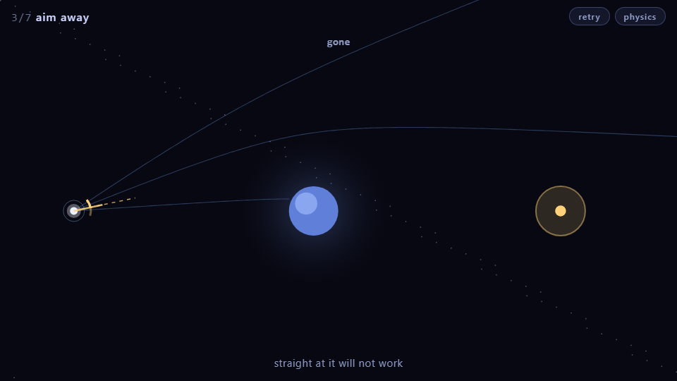

Platformer
Physics edition
Pixel Plumber
The platformer evolved with low-gravity and ice zones that change the physics.

Platformer
Original
Mario Classic
The original Mario-style platformer with coins, enemies and a flag at the end.